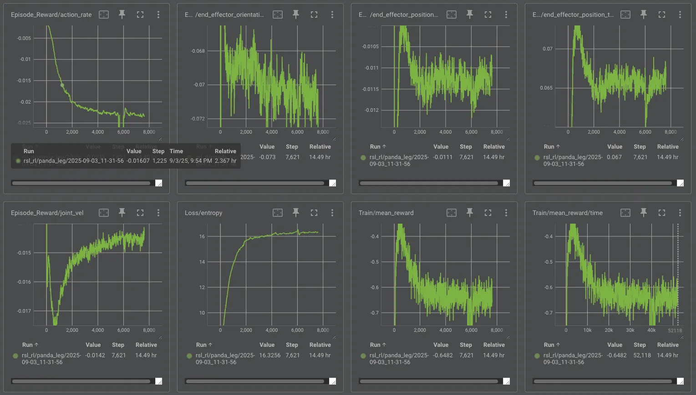
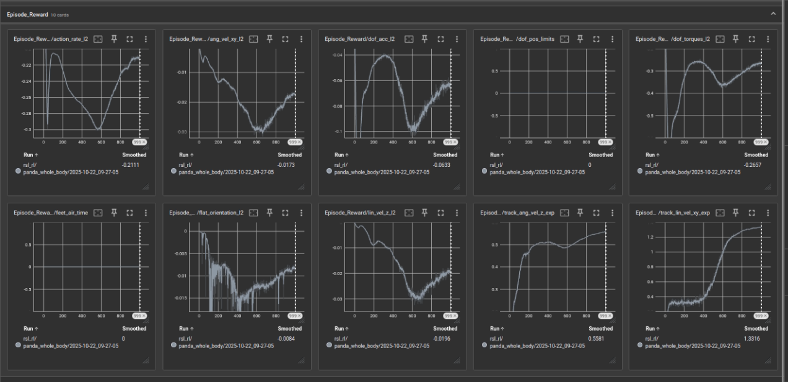

| Encountered Issue | Solution Implemented |
|---|---|
| End-effector constrained to always face downward, limiting natural motion | Removed the orientation constraint and widened joint range of motion |
| Full Panda USD model caused unnecessary restrictions and reduced leg flexibility | Simplified USD to a single-arm model for focused training |
| Removing the orientation reward caused the end-effector to rotate freely (position reached but pose uncontrolled) | Reintroduced orientation tracking reward and expanded allowable Euler command range |
| Increasing number of environments resulted in jitter and longer training without performance gain | Reduced number of environments to maintain stability and shorten training time |
| Early and heavy penalties on action_rate and joint_vel suppressed exploration and caused unstable behavior | Introduced curriculum to gradually increase penalties and tuned reward weights |
| Joint motion became unstable and noisy under improper penalty scaling | Rebalanced penalty terms and progressively adjusted them through curriculum |

